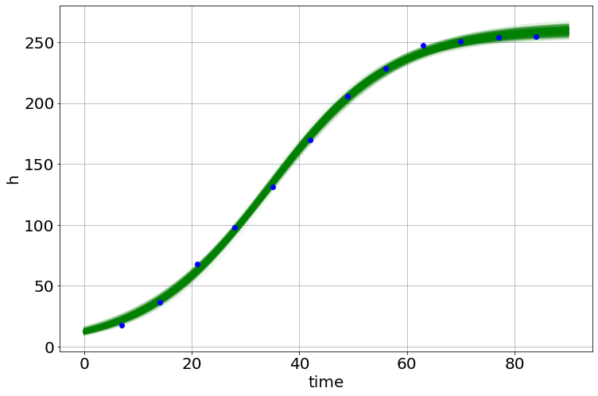
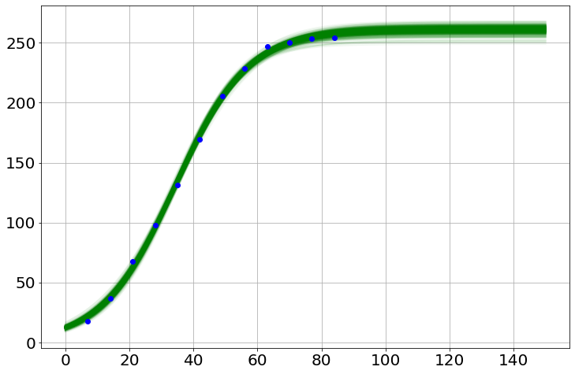

from pyndamics3 import SimulationMCMC (using emcee package)
Useful Functions
pyndamics3 version 0.0.32
dicttable
dicttable (D)
time2str
time2str (tm)
timeit
timeit (reset=False)
corner
corner (samples, labels)
histogram
histogram (y, bins=50, plot=True)
Distributions – Defined for Speed
loglognormalpdf
loglognormalpdf (x, mn, sig)
logbetapdf
logbetapdf (theta, h, N)
lognormalpdf
lognormalpdf (x, mn, sig, all_positive=False)
loghalfnormalpdf
loghalfnormalpdf (x, sig)
loghalfcauchypdf
loghalfcauchypdf (x, x0, scale)
logcauchypdf
logcauchypdf (x, x0, scale)
logexponpdf
logexponpdf (x, _lambda)
logjeffreyspdf
logjeffreyspdf (x)
loguniformpdf
loguniformpdf (x, mn, mx)
lognchoosek
lognchoosek (N, k)
Distribution Classes
Beta
Beta (h=100, N=100)
Initialize self. See help(type(self)) for accurate signature.
Cauchy
Cauchy (x0=0, scale=1)
Initialize self. See help(type(self)) for accurate signature.
LogNormal
LogNormal (mean=0, std=1)
Initialize self. See help(type(self)) for accurate signature.
HalfNormal
HalfNormal (sigma=1)
Initialize self. See help(type(self)) for accurate signature.
HalfCauchy
HalfCauchy (x0=0, scale=1)
Initialize self. See help(type(self)) for accurate signature.
Jeffreys
Jeffreys ()
Initialize self. See help(type(self)) for accurate signature.
Uniform
Uniform (min=0, max=1)
Initialize self. See help(type(self)) for accurate signature.
Exponential
Exponential (_lambda=1)
Initialize self. See help(type(self)) for accurate signature.
Normal
Normal (mean=0, std=1, all_positive=False)
Initialize self. See help(type(self)) for accurate signature.
Emcee functions
lnprior_function
lnprior_function (model)
MCMCModel
MCMCModel (sim, **kwargs)
Initialize self. See help(type(self)) for accurate signature.
MCMCModelReg
MCMCModelReg (sim, verbose=True, **kwargs)
Initialize self. See help(type(self)) for accurate signature.
A linear growth example
Data from http://www.seattlecentral.edu/qelp/sets/009/009.html
t=np.array([7,14,21,28,35,42,49,56,63,70,77,84],float)
h=np.array([17.93,36.36,67.76,98.10,131,169.5,205.5,228.3,247.1,250.5,253.8,254.5])
py.plot(t,h,'-o')
py.xlabel('Days')
py.ylabel('Height [cm]')Text(0, 0.5, 'Height [cm]')
Run an initial (and bad) simulation
sim=Simulation()
sim.add("h'=a",1,plot=True)
sim.add_data(t=t,h=h,plot=True)
sim.params(a=1)
sim.run(0,90)<Figure size 864x576 with 0 Axes>Fitting \(a\)
model=MCMCModel(sim,a=Uniform(-10,10))
result=model.run_mcmc(500)
model.plot_chains()Sampling Prior...
Done.
0.39 s
Running MCMC 1/1...
Done.
40.76 s<Figure size 864x576 with 0 Axes>Although this looked converged, you might have situations where you want to repeat the mcmc-resample loop (i.e. resample parameters from the 95% CI of the current samples)
resultPriors
|
name |
prior | |||||
|
a |
Uniform |
|
||||
|
_sigma_h |
Jeffreys |
|
Fit Statistics
| data points | 12 |
| variables | 2 |
| number of walkers | 100 |
| number of samples | 37500 |
| Bayesian info crit. (BIC) | 112.50038192512125 |
Posteriors
|
name |
value |
2.5% |
97.5% |
|
a |
3.5405 |
2.9562 |
3.825 |
|
_sigma_h |
22.942 |
12.544 |
37.921 |
model.run_mcmc(100,repeat=3)
model.plot_chains()Running MCMC 1/3...
Done.
8.47 s
Running MCMC 2/3...
Done.
8.21 s
Running MCMC 3/3...
Done.
8.20 s<Figure size 864x576 with 0 Axes>model.summary()Priors
|
name |
prior | |||||
|
a |
Uniform |
|
||||
|
_sigma_h |
Jeffreys |
|
Fit Statistics
| data points | 12 |
| variables | 2 |
| number of walkers | 100 |
| number of samples | 7500 |
| Bayesian info crit. (BIC) | 112.50477437641784 |
Posteriors
|
name |
value |
2.5% |
97.5% |
|
a |
3.5456 |
3.0126 |
3.7934 |
|
_sigma_h |
22.97 |
12.659 |
39.585 |
model.best_estimates(){'a': array([3.41276037, 3.5509136 , 3.6829332 ]),
'_sigma_h': array([18.50769675, 22.69773539, 28.29713438])}sim.run(0,90)<Figure size 864x576 with 0 Axes>model.plot_distributions()Fitting with \(a\) and the initial \(h\)
model=MCMCModel(sim,
a=Uniform(-10,10),
initial_h=Uniform(0,180),
)model.run_mcmc(500,repeat=2)
model.plot_chains()Sampling Prior...
Done.
0.43 s
Running MCMC 1/2...
Done.
29.34 s
Running MCMC 2/2...
Done.
29.19 s<Figure size 864x576 with 0 Axes>sim.run(0,90)<Figure size 864x576 with 0 Axes>model.plot_distributions()model.plot_many(0,90,'h')Logistic with the Same Data
t=np.array([7,14,21,28,35,42,49,56,63,70,77,84],float)
h=np.array([17.93,36.36,67.76,98.10,131,169.5,205.5,228.3,247.1,250.5,253.8,254.5])
sim=Simulation()
sim.add("h'=a*h*(1-h/K)",1,plot=True)
sim.add_data(t=t,h=h,plot=True)
sim.params(a=1,K=500)
sim.run(0,90)<Figure size 864x576 with 0 Axes>model=MCMCModel(sim,
a=Uniform(.001,5),
K=Uniform(100,500),
initial_h=Uniform(0,100),
)model.run_mcmc(500,repeat=3)
model.plot_chains()Sampling Prior...
Done.
0.43 s
Running MCMC 1/3...
Done.
38.74 s
Running MCMC 2/3...
Done.
48.56 s
Running MCMC 3/3...
Done.
52.50 s<Figure size 864x576 with 0 Axes>model.best_estimates(){'a': array([0.08452244, 0.08754994, 0.09062923]),
'K': array([258.46068768, 261.11871483, 263.83119905]),
'initial_h': array([11.2367951 , 12.3431459 , 13.55099098]),
'_sigma_h': array([3.12526592, 3.88416891, 5.06139448])}sim.run(0,90)<Figure size 864x576 with 0 Axes>model.plot_distributions()
model.triangle_plot()model.plot_many(0,90,'h')
sim.noplots=True # turn off the simulation plots
saved_h=[]
for i in range(500):
model.draw()
sim.run(0,150)
py.plot(sim.t,sim.h,'g-',alpha=.05)
saved_h.append(sim.h)
sim.noplots=False # gotta love a double-negative
py.plot(t,h,'bo') # plot the data
saved_h=np.array(saved_h)
med=np.percentile(saved_h,50,axis=0)
lower=np.percentile(saved_h,2.5,axis=0)
upper=np.percentile(saved_h,97.5,axis=0)
py.plot(sim.t,med,'r-')
py.plot(sim.t,lower,'r:')
py.plot(sim.t,upper,'r:')
py.plot(t,h,'bo') # plot the data